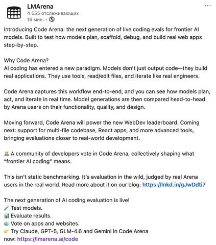

Когда ИИ начал рисовать картины, я молчал: это же все баловство.
По мере развития ИИ, появилась шутка: "Нам говорили, что ИИ снимет с нас рутину и позволит людям заниматься более творческими задачами. В итоге как раз ИИ рисует картины, а посуду я все еще мою руками".
Когда люди начали бояться, что ИИ их заменит, я молчал: я в это не верил.
Потом пошла тема "ИИ нас всех заменит". Но на тот момент еще, вроде бы, не заменил.
Когда начался кризис gpu, я молчал: я не гамаю, а для работы мне гпу не нужен.
Потом начался кризис gpu-карточек, потому что все ушло на ллм. Сейчас, говорят, память люто подорожала. Но ее можно оптимизировать.
Когда они пришли за нашими ставками - заступиться за них было уже некому.
Но теперь ИИ пришел за нашими зарплатами и хэдкаунтами. Начинают встречаться пассажи типа "СЕО McKinsey рассказал, что в компании сейчас работают 60+ тыс. сотрудников: 40 тыс. человек (humans) и 25 тыс. ИИ-агентов (AI Agents)". ИИ-агентов он counts as “people” that Firm “employs” (считает наравне с другими нанятыми сотрудниками).
Вот мне интересно - они считают ИИ-агентов как сотрудников, потому что они уже стоят одинаково? Или потому что польза сопоставима? Или просто чтобы красиво сложить численность?
ИИ - это же, вроде как, про эффективность. Но если ИИ-employee окажется дороже живых людей, потому что ему нужно больше дорогостоящего железа, где мы окажемся? Начнем увольнять агентов и заменять их более дешевой рабочей силой кожаных мешков?
В общем, какая-то нездоровая история. На мой взгляд, лучше отделять мух от котлет. Капекс (компьют) - отдельно, опекс (фот) - отдельно. Инструменты - отдельно, мозги - отдельно. Иначе докатимся до того, что, не разобравшись, поставим куда-то ИИ-онли команду, а потом будем удивляться результатам.
